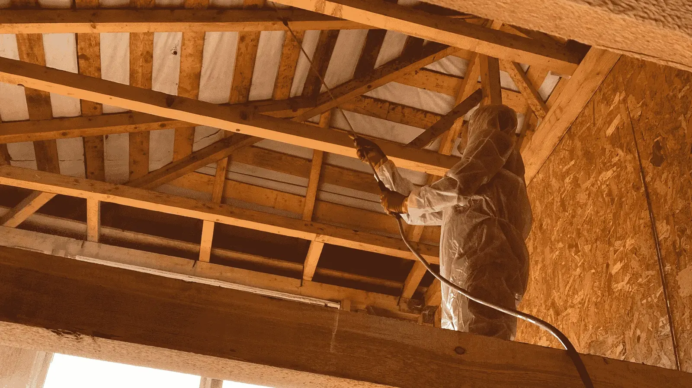
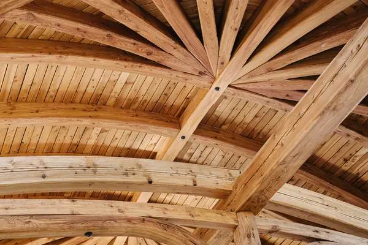
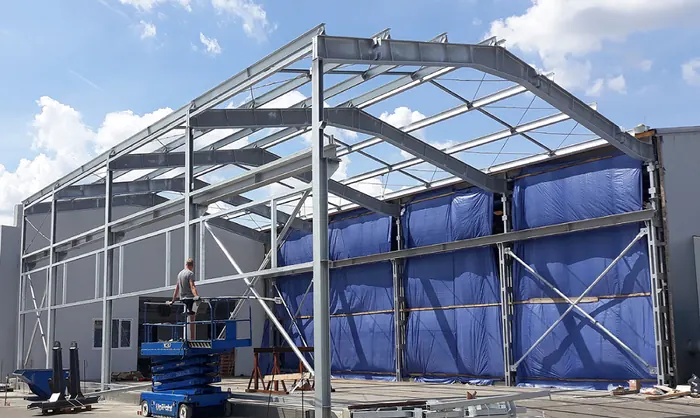
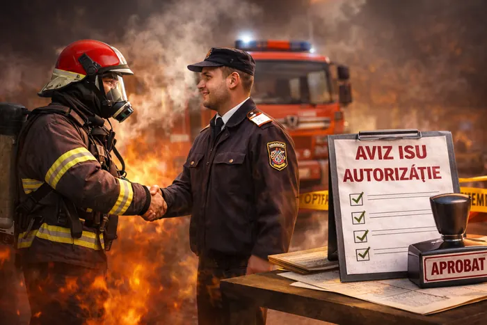
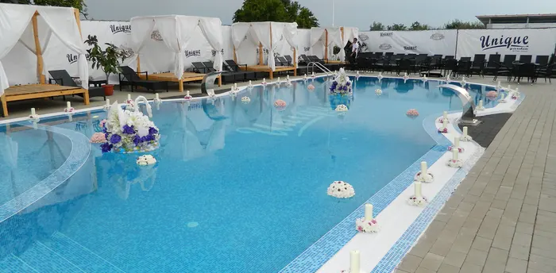
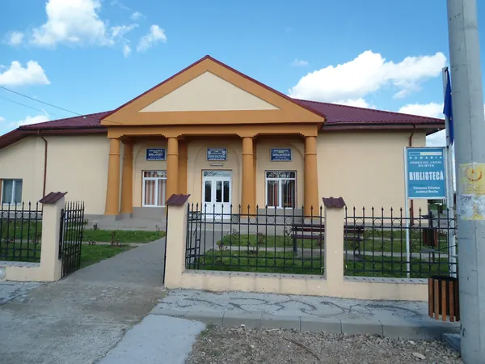
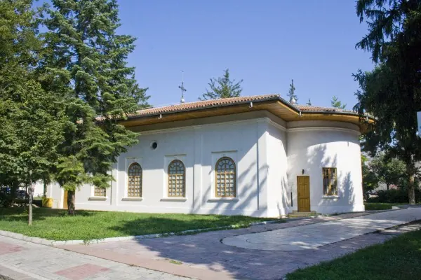
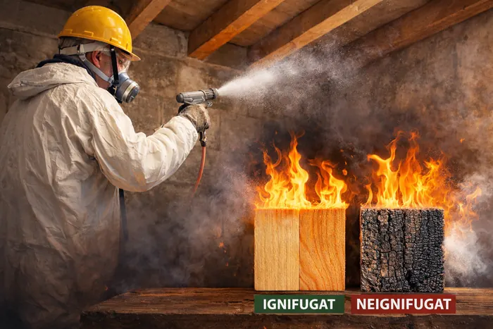
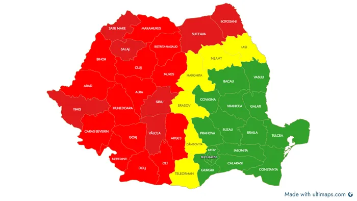

Ignifugare lemn și construcții, cu acte pentru ISU
SC Ignifug SRL tratează la foc șarpante, structuri din lemn și construcții industriale din 2004. Prelevăm mostre, le testăm în laborator autorizat, ignifugăm și vă ajutăm cu documentația pentru avizul și autorizația ISU.
- 2004anul înființării
- 20+ anide experiență
- 11 județeși zonele învecinate

Servicii de ignifugare pentru orice tip de construcție
Lucrăm pentru proprietari de case, firme de construcții, instituții publice și companii care au nevoie de aviz sau autorizație ISU.

Ignifugare lemn și șarpante
Grinzi, căpriori, astereală, structuri portante, lambriuri și elemente decorative din lemn sau derivate din lemn.
Detalii ignifugare lemn →
Hale și construcții industriale
Protecție la foc pentru hale de producție, depozite, spații logistice și materialele combustibile din ele.
Detalii hale industriale →
Documentație pentru aviz ISU
Tratamente documentate conform legii și sprijin la întocmirea dosarului pentru avizul și autorizația de securitate la incendiu.
Detalii aviz ISU →Lemnul tratat urcă pe scala de reacție la foc
Materialele de construcții sunt clasificate după standardul SR EN 13501-1, de la A1 (incombustibil) la F. Lemnul masiv netratat se încadrează de regulă în clasa D. Tratamentul ignifug urmărește o clasă superioară, de obicei B sau C, în funcție de produs și de cerințele proiectului.
- Lemn netratat (de regulă D-s2,d0)
- Lemn ignifugat (de obicei B sau C)
Clasa obținută depinde de produsul aplicat, de specia lemnului și de rezultatele testelor de laborator.
De la evaluare la documentele pentru ISU
Aceeași procedură pentru o casă sau pentru o hală de câteva mii de metri pătrați.
Evaluare și ofertă
Stabilim ce elemente trebuie tratate, suprafața și cerințele din proiect sau din scenariul de securitate la incendiu.
Mostre la laborator
Prelevăm mostre din materialul de tratat, le ignifugăm și le trimitem la un laborator autorizat pentru analiză.
Ignifugarea completă
Pe baza rezultatelor, tratăm întreaga construcție cu soluții omologate, aplicate de personal calificat.
Documentație
Lucrarea este documentată conform legii, iar dumneavoastră primiți actele necesare pentru avizul sau autorizația ISU.
Construcții în care executăm ignifugări
Șarpante de case și pensiuni, pergole și terase din lemn, instituții publice, lăcașuri de cult și spații industriale.




O firmă din Brăila cu peste două decenii în protecția la foc
- Peste 20 de ani de experiențăFirmă înființată în 2004 în Brăila, specializată în ignifugare și protecție la foc.
- Soluții certificateFolosim produse omologate și respectăm normele ISU și legislația în vigoare.
- Mostre testate în laboratorMaterialul tratat este verificat de un laborator autorizat înainte de ignifugarea completă.
- Sprijin pentru avizul ISUConsultanță de specialitate și ajutor la documentația pentru avize și autorizații.
- Prețuri corect calculateOfertă bazată pe suprafața reală și pe tipul lucrării, fără costuri ascunse.
- Termene respectateSeriozitate, atenție la detalii și lucrări predate la timp, de la case la hale.
Ignifugare în Brăila și în tot Sud-Estul țării
Echipa pleacă din Brăila și execută lucrări în Sud, Sud-Est și Estul României.
- Brăila
- Galați
- Buzău
- Tulcea
- Constanța
- Vrancea
- București
- Ilfov
- Iași
- Vaslui
- Bacău

Întrebări despre ignifugare
Ce este ignifugarea?
Ignifugarea este tratarea materialelor combustibile, în special a lemnului, cu substanțe speciale care întârzie aprinderea, reduc viteza de ardere și încetinesc propagarea focului. Tratamentul nu face lemnul incombustibil, dar oferă timp suplimentar pentru evacuare și pentru intervenția pompierilor.
Este obligatorie ignifugarea pentru avizul sau autorizația ISU?
Pentru multe construcții care au elemente din lemn (șarpante, structuri portante, finisaje) normele de securitate la incendiu cer tratarea materialelor combustibile. Fără tratament și fără documentele aferente, construcția poate fi considerată neconformă, iar avizul sau autorizația ISU pot fi întârziate ori respinse.
Ce documente primesc după ignifugare?
Lucrarea este documentată conform cerințelor legale în vigoare. Pentru fiecare proiect se prelevează mostre din materialul tratat, care sunt analizate de un laborator autorizat. Vă ajutăm și cu întocmirea documentației necesare la ISU.
Cât costă ignifugarea lemnului?
Prețul depinde de suprafața de tratat, de tipul elementelor (șarpantă, grinzi, lambriu, structură), de accesul la lucrare și de localitate. Ne sunați sau ne scrieți, iar după o evaluare primiți o ofertă calculată pentru lucrarea dumneavoastră.
Lucrați și în afara Brăilei?
Da. Sediul este în Brăila, iar lucrări executăm în Sud, Sud-Est și Estul României: Galați, Buzău, Tulcea, Constanța, Vrancea, București, Ilfov, Iași, Vaslui, Bacău și județele învecinate.
Ce tipuri de construcții ignifugați?
Case și vile cu șarpantă din lemn, pensiuni și restaurante, instituții publice, biserici, hale industriale, depozite și spații de producție sau logistică.
Cereți o ofertă de ignifugare
Spuneți-ne ce trebuie tratat (șarpantă, structură din lemn, hală), suprafața aproximativă și localitatea. Vă răspundem cu pașii următori și o ofertă.
- Telefon0740 899 950
- Emailignifugbraila@yahoo.com
- ContactGheorghiță Petrică
- SediuStr. Frumoasa nr. 77, Brăila